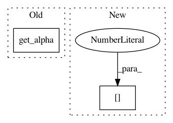

7fbd4c2ed21a966bd6b6bd656ccf07155378baac,lib/matplotlib/lines.py,Line2D,draw,#Line2D#Any#,733
Before Change
self.get_markerfacecoloralt(), "none")):
gc.set_alpha(rgbaFaceAlt[3])
else:
gc.set_alpha(self.get_alpha())
renderer.draw_markers(
gc, alt_marker_path, alt_marker_trans, subsampled,
After Change
if (cbook._str_equal(self._markeredgecolor, "auto")
and not cbook._str_lower_equal(
self.get_markerfacecolor(), "none")):
ec_rgba = ec_rgba[:3] + (fc_rgba[3],)
gc.set_foreground(ec_rgba, isRGBA=True)
marker = self._marker
In pattern: SUPERPATTERN
Frequency: 4
Non-data size: 2
Instances
Project Name: matplotlib/matplotlib
Commit Name: 7fbd4c2ed21a966bd6b6bd656ccf07155378baac
Time: 2018-04-28
Author: anntzer.lee@gmail.com
File Name: lib/matplotlib/lines.py
Class Name: Line2D
Method Name: draw
Project Name: matplotlib/matplotlib
Commit Name: cd9d84f4b122390a56b8cd6e7179cb6afd740f3f
Time: 2018-03-13
Author: thuvejan@users.noreply.github.com
File Name: lib/matplotlib/backends/backend_svg.py
Class Name: RendererSVG
Method Name: _draw_text_as_path
Project Name: matplotlib/matplotlib
Commit Name: 393c862f12fa14b853b66040b59e5dc111d97c5d
Time: 2018-08-04
Author: tcaswell@gmail.com
File Name: lib/matplotlib/lines.py
Class Name: Line2D
Method Name: draw
Project Name: matplotlib/matplotlib
Commit Name: cd9d84f4b122390a56b8cd6e7179cb6afd740f3f
Time: 2018-03-13
Author: thuvejan@users.noreply.github.com
File Name: lib/matplotlib/backends/backend_svg.py
Class Name: RendererSVG
Method Name: _draw_text_as_text